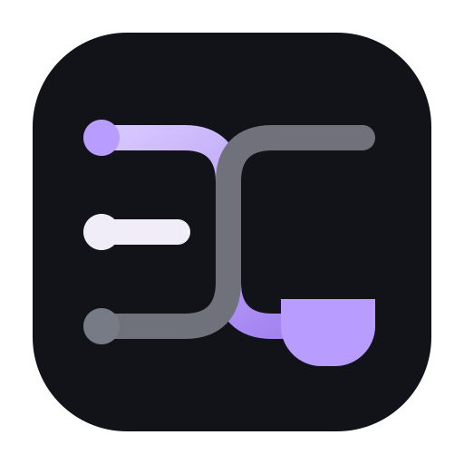

ThreadDeskDein Arbeitsplatz entsteht.
ThreadDesk richtet sich beim ersten Start selbst ein. Dieses Fenster darf geöffnet bleiben.
01 · Umgebunglokal vorbereiten
02 · OberflächeBestandteile laden
03 · StartThreadDesk öffnen

ThreadDeskThreadDesk richtet sich beim ersten Start selbst ein. Dieses Fenster darf geöffnet bleiben.